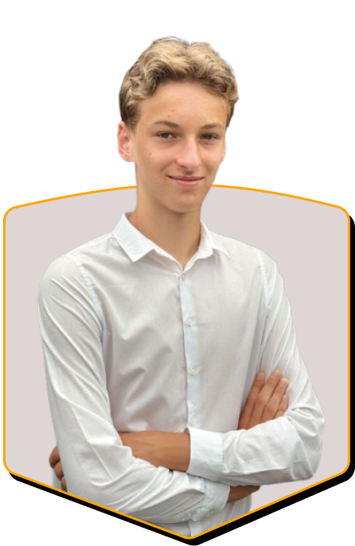

Ostap
Zatorskyy
Fachinformatiker - Anwendungsentwicklung
Ausbildung oder Praktikum

Fachinformatiker - Anwendungsentwicklung
Ausbildung oder Praktikum
Motivierter und lernbereiter IT-Enthusiast mit Fokus auf Software- und Webentwicklung.
Seit drei Jahren erweitere ich mein Wissen über verschiedene Plattformen, um kreative Ideen in funktionierende Anwendungen umzusetzen. Sportliche und musikalische Aktivitäten haben meine Teamfähigkeit, Disziplin und Zielstrebigkeit gestärkt.
09/2016 – 06/2025 (seit 03/2022 – online)
Lyzeum #16, Drohobych, Ukraine
09/2022 – bis heute
Staatliche Realschule an der Salzstraße, Kempten
HTML5
CSS3
SASS
JavaScript
Bootstrap
Git
Figma
MySQL
Java
Spring Boot
JUnit
Maven

Ukrainisch
Muttersprache

Deutsch
fließend

Englisch
gut

Französisch
Grundkenntnisse